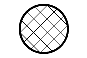
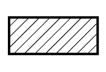

REPAIR INSTRUCTION > VEHICLE LIFT AND SUPPORT LOCATIONS |
| NOTICE ABOUT VEHICLE CONDITION WHEN RAISING VEHICLE |
The vehicle must be unloaded before jacking up or raising the vehicle. Never jack up or raise a heavily loaded vehicle.
Set the jack and safety stands exactly under the specified locations on the vehicle.
Never try to jack up or raise a vehicle that exceeds the weight specifications of the equipment being used.
When raising the vehicle, first raise the vehicle only a little, and then shake the vehicle slightly to make sure it is stable before raising it to the specified position.
Before removing the jack, tap the safety stands with a hammer or equivalent to make sure that the vehicle is properly supported.
When using a lift, always lower the vehicle when work is not being performed.
When removing any heavy components like the engine or transmission, the vehicle's center of gravity will shift. To stabilize the vehicle, place a balance weight in a location that will prevent the vehicle from rolling or shifting, or place a transmission jack under the appropriate jack position at the opposite end of the vehicle.
| NOTICE FOR USING 4 POST LIFT |
Follow the safety procedures outlined in the lift's instruction manual.
Do not damage the tires or wheels while driving onto the lift.
Use wheel chocks to secure the vehicle.
| NOTICE FOR USING JACK AND SAFETY STANDS |
Work on a level surface. Use wheel chocks at all times.
Use safety stands with rubber attachments as shown in the illustration.
Set the jack and safety stands exactly under the specified locations on the vehicle.
Do not work on or leave the vehicle supported only by a jack. Be sure to support the vehicle with safety stands.
When jacking up the vehicle, first release the parking brake and move the shift lever to N.
When jacking up the entire vehicle:
When jacking up the front wheels first, make sure wheel chocks are behind the rear wheels.
When jacking up the rear wheels first, make sure wheel chocks are in front of the front wheels.
When jacking up only the front or rear wheels of the vehicle:
Before jacking up the front wheels, place wheel chocks on both sides of the rear wheels.
Before jacking up the rear wheels, place wheel chocks on both sides of the front wheels.
When lowering a vehicle that only has its front or rear wheels jacked up.
|  |
|
|
|  |
| - |
Before lowering the front wheels, make sure wheel chocks are in front of the rear wheels.
Before lowering the rear wheels, make sure wheel chocks are behind the front wheels.